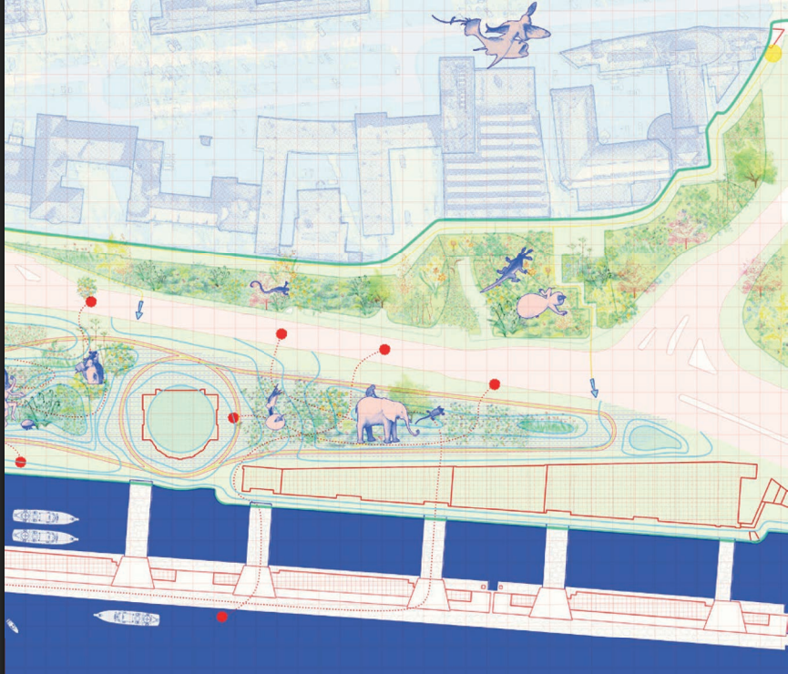
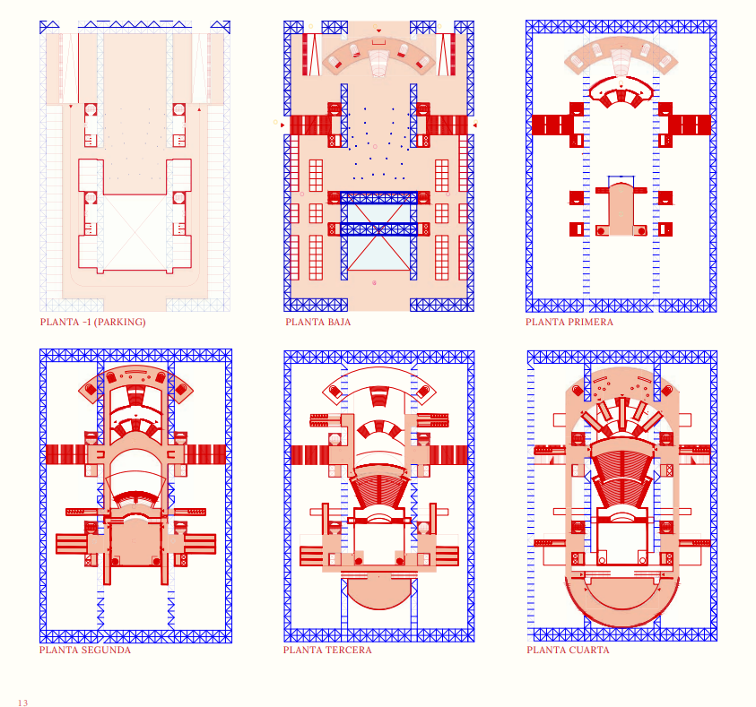
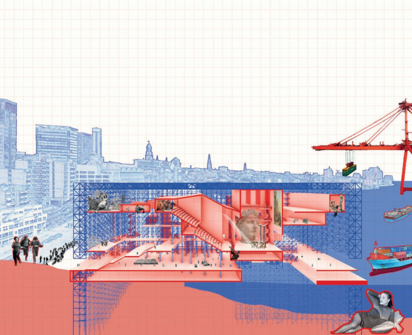
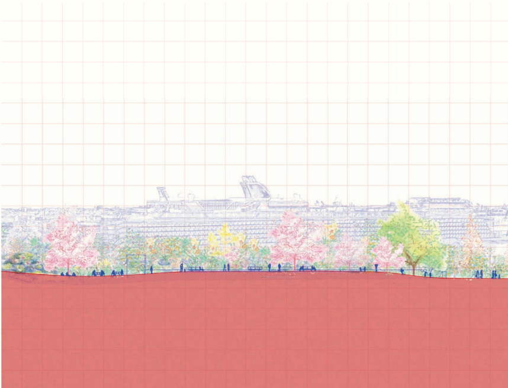
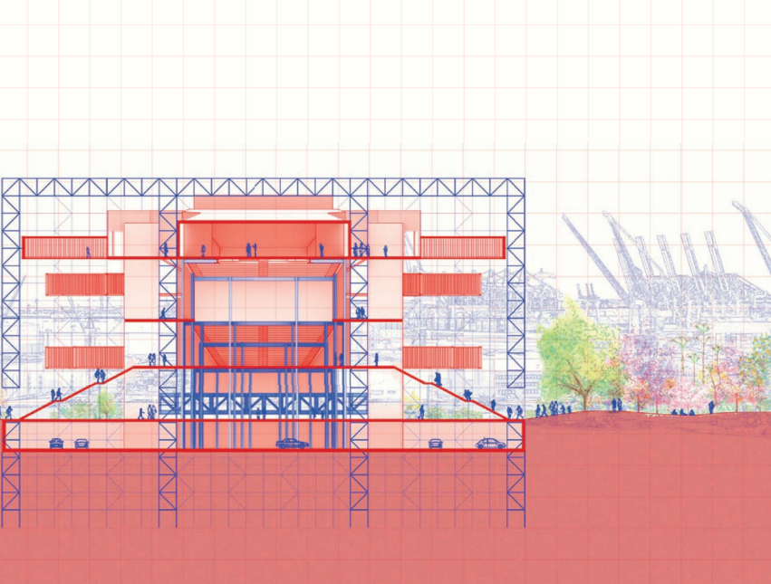
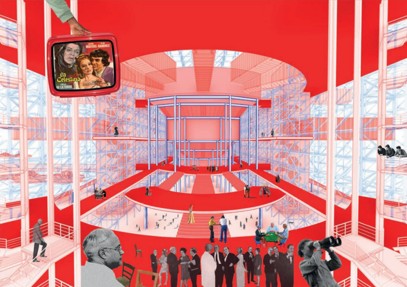

Axonometría vista general
← Proyectos · Teatro · Equipamiento
Axonometría vista general
El proyecto redefine el espacio teatral integrándolo en la ciudad a través de una estructura reticular metálica inspirada en el paisaje portuario de Hamburgo. Partimos del análisis de la evolución del teatro, desde su carácter efímero medieval hasta las grandes estructuras europeas del siglo XIX, seleccionando y reinterpretando sus elementos más significativos para crear un teatro collage.
Suspendidos y apoyados en la estructura, los volúmenes del teatro generan un nuevo paseo fluvial conectado al anillo verde de Hamburgo, revitalizando la zona del Fishmarket. El edificio se organiza en distintos niveles: en la planta baja, los accesos y un espacio de encuentro urbano; en los niveles superiores, el foyer, la torre escénica, el patio de butacas y las áreas de trabajo.
En la parte más alta, un museo panorámico y la academia de teatro fortalecen su relación con la ciudad. La torre escénica conforma un teatro dinámico integrado al puerto donde arquitectura y ciudad se funden en una nueva experiencia escénica.
Documentación gráfica

Fumetto sulla costruzione — sec. 1

Fumetto sulla costruzione — sec. 2

Planta situación ámbito proyecto · Hamburgo

Planta –1 · Parking

Planta Baja

Planta Primera

Sección longitudinal · E 1/500

Sección transversal · E 1/500

Collage vista foyer